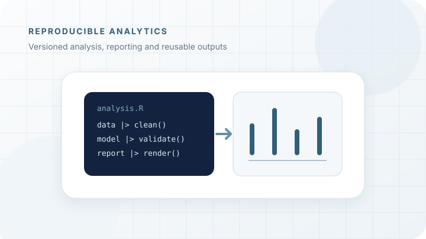
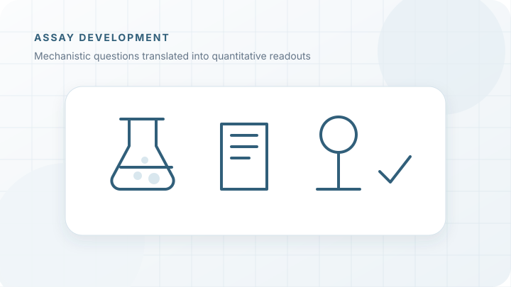

Scientific questions approached across experiments and data
These examples focus on the reasoning behind a workflow: what needed to be measured, how the method was adapted, how data quality was assessed and how the results were interpreted.
Long-read RNA biology

Resolving RNA heterogeneity and processing
Long-read approaches make it possible to observe transcript boundaries, combinations of processing events and complete RNA intermediates on individual molecules.
Question
How can single-molecule sequencing be adapted to reveal the formation and maturation of prokaryotic RNA molecules?
Approach
Development and benchmarking of Nanopore RNA and cDNA workflows, including sample preparation, library strategy, depletion concepts, quality control and computational analysis.
Contribution
Experimental workflow development, sequencing strategy, analysis design, visualization and interpretation across bacterial and archaeal systems.
Outcome
Workflows that resolve RNA ends, processing intermediates and molecular heterogeneity beyond conventional short-read summaries.
Multi-omics stress response

Following dynamic cellular responses across molecular layers
Transcript and protein abundance can change with different kinetics and reveal complementary aspects of cellular adaptation.
Question
How do prokaryotic cells coordinate transcriptional and translational responses during environmental stress and recovery?
Approach
Time-resolved transcriptomics and proteomics, supported by transcript-boundary mapping, statistical modelling and integrated visualization.
Contribution
Study design, sequencing strategy, statistical evaluation, multi-omics integration and reconstruction of regulatory responses.
Outcome
A time-resolved view of stress adaptation distinguishing immediate transcriptional regulation from delayed protein-level responses.
Quality-aware molecular workflows

Designing workflows around data quality and practical use
A technically successful run is not enough if sample quality, method fit, documentation and downstream interpretation are not considered together.
Question
How can sequencing and molecular workflows be evaluated before they are used for difficult samples or collaborative applications?
Approach
Assessment of sample purity and integrity, input requirements, library strategies, expected coverage, controls, data handover and routine-use risks.
Contribution
Technical consultation, workflow planning, sample-QC assessment, troubleshooting, data interpretation and methods documentation across academic and industry collaborations.
Outcome
Clearer go/no-go decisions, more realistic experimental expectations and traceable handover from sample preparation to analysis.
Reproducible analytical workflows

Making complex analyses reusable and communicable
An analysis is most useful when its assumptions, transformations and outputs remain understandable after the first result has been generated.
Question
How can data-intensive projects remain transparent while datasets, collaborators and analytical questions evolve?
Approach
Modular R analysis, version control, parameterized reporting, reusable visualizations and structured computational pipelines.
Contribution
Development of analysis templates, automated reports, dashboards and documented project structures used across collaborative projects.
Outcome
Faster iteration, clearer quality checks and more consistent communication between experimental and computational contributors.
Molecular and biochemical assay development

Translating mechanistic questions into measurable assays
Experimental systems are most useful when readouts, controls and analytical limits are designed around the biological question.
Question
How can transcriptional, translational and protein-level mechanisms be tested in controlled experimental systems?
Approach
Cloning, recombinant protein expression and purification, in vitro workflows, plate-reader assays, qPCR and complementary biophysical measurements.
Contribution
Assay design, method establishment, optimization, quantitative evaluation and supervision of experimental implementation.
Outcome
Practical experimental systems connecting molecular mechanisms with quantitative and reproducible readouts.